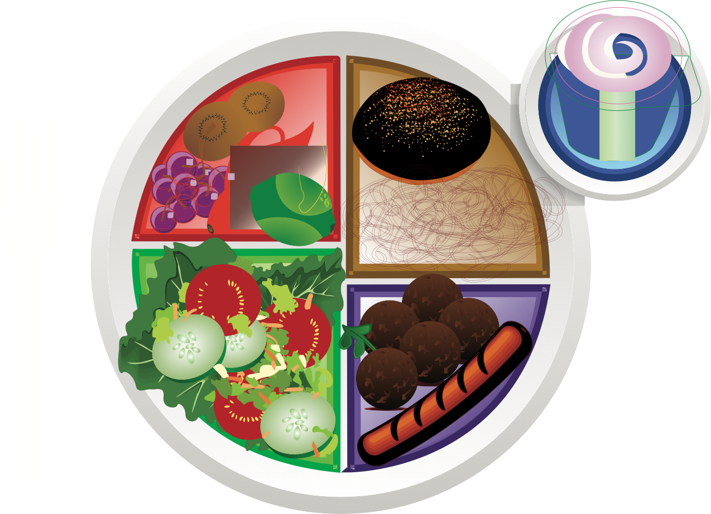

طبقي: خطوة بخطوة
لقد قدمنا مفهوم "طبقي" باختصار في الدرس الأخير. لذا دعونا نسترجع بعض المفاهيم ومن ثم بدأ في شرح الإرشادات:
- تخيل خطًا مرسومًا في منتصف طبق عشائك يقسمه إلى نصفين، ثم تخيل أن أحد نصفي الطبق ينقسم إلى نصفين مرة أخرى، لذا سيكون لديك ثلاثة أقسام في طبقك.
- املء القسم الأكبر بالخضروات غير النشوية
- املء أحد القسمين الصغيرين بالحبوب و الخضروات النشوية
- ثم املء القسم الصغير الأخر بالبروتين.
- أضف حصة من الفواكه، أو حصة من منتجات الألبان أو كليهما كما تسمح لك خطة وجبتك.
- اختر الدهون الصحية بكميات صغيرة. استخدم زيوتًا للطهي. أضف بعض الإضافات الصحية للسلطات، مثل المكسرات، والبذور، والأفوكادو وصوص الخل.
- أضف مشروبًا منخفض السعرات الحرارية، أو مشروبًا بدون سعرات حرارية مثل الماء، أو الشاي أو القهوة غير المُحليين.
سنتحدث الآن عن كل مجموعة من المجموعات الغذائية التي تُعد جزءًا من مفهوم طبقي: الخضروات والحبوب والفواكه والبروتينات ومنتجات الألبان.